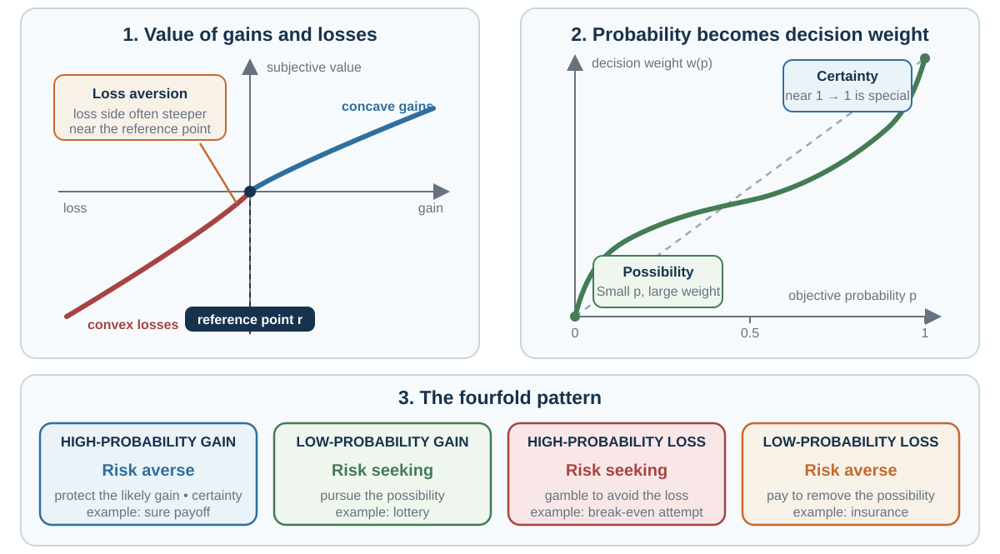

20 Prospect Theory: Gains and Losses Begin at a Reference Point
Expected utility asks where wealth ends. Prospect theory asks how the outcome is represented—as a gain or a loss, with what distance from a reference point, and with what decision weight.
Learning goals
- Explain reference dependence, diminishing sensitivity, loss aversion, and probability weighting.
- Use a prospect-theory value function and distinguish probability from decision weight.
- Derive the certainty effect, possibility effect, and fourfold pattern of risk attitudes.
- Diagnose gain–loss framing while testing whether descriptions are substantively equivalent.
- Treat loss aversion as bounded and model-dependent rather than constant.
- Compare loss-aversion, ownership, effort, attention, switching-cost, and information accounts of endowment, IKEA, and status quo effects.
- Distinguish narrow from broad framing and connect risky choice to mental accounting.
- Redesign a frame transparently without choosing on another person’s behalf.
Opening puzzle: 200 saved or 400 lost?
Imagine an outbreak expected to kill 600 people. Choose between:
- Program A: 200 people will be saved.
- Program B: a one-third chance that 600 will be saved and a two-thirds chance that nobody will be saved.
Now choose between:
- Program C: 400 people will die.
- Program D: a one-third chance that nobody will die and a two-thirds chance that 600 will die.
Programs A and C describe the same final number of lives. Programs B and D describe the same probability distribution. Yet in Tversky and Kahneman’s (1981) separate samples, 72% selected A in the gain frame, whereas 78% selected D in the loss frame.
The arithmetic did not change. The reference point did.
The first frame makes lives saved feel like gains and supports the sure option. The second makes deaths feel like losses and supports the gamble that might avoid the loss. This result does not mean wording always reverses preference, or that all respondents reasoned identically. It creates the question prospect theory was built to answer: why can equivalent final states produce different risk attitudes when represented as gains and losses?
The benchmark: final wealth should absorb the frame
Expected utility evaluates final wealth:
\[ EU=\sum_i p_i u(W+x_i). \]
If two descriptions generate the same final outcomes with the same probabilities, a consistent expected-utility chooser should rank them the same. Gains and losses matter only through their contribution to final wealth.
Prospect theory changes three elements (Kahneman & Tversky, 1979; Tversky & Kahneman, 1992):
- outcomes are coded relative to a reference point;
- value changes nonlinearly over gains and losses;
- probabilities become decision weights rather than entering linearly.
The model is descriptive. It organizes recurring patterns in choice. It does not say that a person should overweight a small probability or treat a reference point as an entitlement.
Reference dependence: the zero is psychologically constructed
Let \(r\) be a reference point and \(x\) an outcome. Prospect value depends on \(x-r\), not only \(x\). The same salary can feel like a gain relative to last year’s pay, a loss relative to an expected promotion, and an insult relative to a colleague’s salary.
Reference points can come from:
- the current endowment or status quo;
- an expectation or promise;
- a goal, target, or budget;
- a recent high or low;
- a social comparison;
- a counterfactual outcome;
- the frame supplied by a question or institution.
These sources can conflict. A negotiator may use the current contract as one reference, the first offer as another, and a peer’s deal as a third. Identifying the active reference point from choice alone is therefore difficult.
Counterfactuals make this visible. Olympic bronze medalists can compare their result with no medal, while silver medalists can compare theirs with gold. Medvec, Madey, and Gilovich (1995) found facial and interview evidence consistent with bronze medalists sometimes expressing greater satisfaction than silver medalists. The medal does not determine experience by itself; the comparison does.
Expectations can also become reference points. A DKK 10,000 bonus may feel like a gain if no bonus was expected and a loss if DKK 15,000 was promised. Models of expectation-based reference dependence make this idea explicit (Kőszegi & Rabin, 2006). But an expectation is not automatically a right, and an analyst should not infer it only because the choice fits the model.
The value function: sensitivity diminishes with distance
A common functional form is
\[ v(z)= \begin{cases} z^{\alpha}, & z\ge 0,\\ -\lambda(-z)^{\beta}, & z<0, \end{cases} \qquad z=x-r, \]
with \(0<\alpha,\beta\le 1\) and often \(\lambda>1\).
The parameters represent three ideas:
- Reference dependence: \(z=0\) is the reference point.
- Diminishing sensitivity: with \(\alpha,\beta<1\), the move from 0 to 100 changes value more than the move from 1,000 to 1,100.
- Loss aversion: with \(\lambda>1\), the loss side is steeper near the reference point than the gain side.
Concavity over gains tends to support risk aversion; convexity over losses tends to support risk seeking. But the value function alone is not the whole theory. Probability weighting can reverse those tendencies, especially for rare events.
Tversky and Kahneman’s (1992) fitted cumulative-prospect specification estimated \(\alpha=\beta=0.88\) and \(\lambda=2.25\) in their data. These numbers are historically important model estimates, not psychological constants. Other tasks, stakes, samples, reference points, and estimation choices yield different parameters.
Probability weighting: decision weight is not belief
Prospect theory replaces objective probabilities with decision weights. A common one-parameter display is
\[ w(p)=\frac{p^\gamma} {\left[p^\gamma+(1-p)^\gamma\right]^{1/\gamma}}, \qquad 0<\gamma\le 1. \]
When \(\gamma<1\), the curve is typically inverse-S shaped: small probabilities receive disproportionately high weight, while moderate and high probabilities receive lower weight than their numerical size would suggest. Tversky and Kahneman (1992) estimated separate weighting parameters of \(\gamma=0.61\) for gains and \(\delta=0.69\) for losses in their fitted model. Again, these are estimates from one specification and dataset.
A decision weight is not necessarily a judged probability. A person can correctly report a 1% chance while giving that possibility more influence on choice than expected utility would. Vividness, affect, attention, and the possibility of zero can all affect impact without changing stated belief.
For prospects with several outcomes, cumulative prospect theory does not simply multiply each outcome by \(w(p_i)\). Outcomes are ranked, cumulative probabilities are transformed, and decision weights are differences between those transformed cumulative probabilities. This construction preserves stochastic dominance better than the original 1979 formulation. The curve in the figure is therefore a teaching representation of probability impact, not a complete multi-outcome calculation.

Certainty and possibility are psychological boundaries
A probability change from 95% to 100% removes all chance of failure. A change from 45% to 50% does not. Prospect theory captures the special impact of certainty: the final step to 100% can matter more than an equal numerical increase in the middle of the scale. This certainty effect helps explain the sure option in the first Allais pair and risk aversion for high-probability gains.
The move from 0% to a small positive probability creates a possibility that did not exist before. This possibility effect can make a tiny chance of a jackpot compelling and a tiny chance of catastrophe worth insuring.
Neither effect makes every tiny probability important. Very small probabilities may also be ignored, rounded to zero, or never encountered. How a probability is described and learned matters—a boundary developed in the next chapter on decisions from experience.
The fourfold pattern of risk attitudes
Value curvature and probability weighting jointly produce four common patterns.
| Domain | High probability | Low probability |
|---|---|---|
| Gain | Risk aversion: protect a likely gain; prefer a sure amount to a slightly larger gamble | Risk seeking: pursue a small chance of a large gain; lottery-like choice |
| Loss | Risk seeking: gamble to avoid a likely loss; escalation or “break even” attempt | Risk aversion: pay to remove a small chance of catastrophe; insurance-like choice |
The table describes tendencies, not four fixed personality types. A person can buy insurance and a lottery ticket without one stable switch from “averse” to “seeking.” The probability range and gain–loss domain differ.
Worked calculation: a low-probability gain
Consider a 1% chance of DKK 10,000 and otherwise zero. Its expected monetary value is DKK 100. Under expected utility with linear utility, DKK 100 certain and the lottery are equal.
Under a prospect-theory representation, the value of the lottery is approximately
\[ w(0.01)v(10{,}000)+[1-w(0.01)]v(0). \]
If \(w(0.01)>0.01\), the small chance receives more decision impact than its objective probability. Diminishing sensitivity to the prize pushes in the other direction. The resulting preference depends on both functions, the reference point, and any price paid for the ticket. Prospect theory is a model of their combination, not the slogan “people overweight small probabilities.”
Framing changes the reference point, but equivalence must be checked
The Asian-disease programs are mathematically equivalent under the stated assumptions. A gain frame supports the concave side of the value function; a loss frame supports the convex side. This is risky-choice framing.
Other phenomena called “framing” are different:
- attribute framing: “90% survival” versus “10% mortality” changes which attribute is salient;
- goal framing: “gain by acting” versus “avoid losing by not acting” changes the motivational consequence;
- reference-point framing: “bonus” versus “reduction from expected bonus” changes the coded zero;
- substantive reframing: descriptions omit different facts or imply different causal models and are not actually equivalent.
Before diagnosing bias, verify equivalence. “90% survival after surgery” and “10% mortality during surgery” may differ in time horizon. “Keep DKK 200” and “lose DKK 200” may imply different starting endowments. A preference reversal is normatively troubling only if the options are substantively the same for the decision-maker.
The original Asian-disease results came from separate groups answering hypothetical problems. Later work finds that framing effects vary with wording, numeracy, task structure, and population. In a preregistered multinational study of 4,098 participants in 19 countries and 13 languages, Ruggeri and colleagues (2020) replicated 94% of tested items and 12 of 13 theoretical contrasts, with attenuation and meaningful cross-country and within-person variation. Replication supports the family of patterns, not a single universal effect size.
Loss aversion: influential, measurable, and bounded
Loss aversion means that, around a reference point, a loss changes value more than a comparable gain. It is not the same as risk aversion. A person can be loss averse yet risk seeking over losses, and risk averse without coding an outcome as a loss.
The familiar statement “losses loom about twice as large as gains” compresses a model estimate into a law. That is too strong. Estimated \(\lambda\) depends on:
- which reference point is assumed;
- the range and sign of outcomes;
- probability weighting and utility curvature;
- response noise and functional form;
- whether choices are risky or riskless;
- experience, market institutions, and incentives;
- whether zero outcomes are treated as gains, losses, or neutral.
Gal and Rucker (2018) argue that evidence does not justify loss aversion as a context-free general principle. Other work supports loss aversion in particular tasks and populations. The scientifically useful conclusion is conditional: specify the domain, measurement model, comparison, and alternative mechanism.
Endowment effects: giving up is not the same as owning
An endowment effect occurs when ownership changes valuation or willingness to trade. In classic experiments, randomly endowed participants were often less willing to exchange an object, and sellers demanded more than buyers offered for similar goods (Kahneman et al., 1990).
Loss aversion offers one explanation: giving up an owned mug is coded as a loss, while acquiring it is a gain. But a willingness-to-accept/willingness-to-pay gap is not a pure measure of \(\lambda\). Other mechanisms include:
- transaction costs, strategic misrepresentation, and income effects;
- uncertainty about the elicitation mechanism;
- attachment, identity, and psychological ownership;
- buyers and sellers attending to different attributes;
- reference prices and beliefs about market value;
- reluctance to act or trade;
- information conveyed by the initial allocation.
Plott and Zeiler (2005) found no WTA–WTP gap in their mug and lottery experiments when they used extensive training, incentive-compatible procedures, anonymity, and controls aimed at misconceptions. List (2003) found that the anomaly diminished with market experience in field and experimental evidence. Morewedge and Giblin (2015) review evidence for several cognitive and strategic accounts.
The evidence does not make the endowment effect imaginary. It makes its mechanism an empirical question.
A practical ownership test
When an owner refuses to sell, ask:
- Would the owner buy one more at the stated selling price?
- What replacement cost, search cost, tax, or uncertainty is being omitted?
- Does the object carry identity, memory, or relationship value absent from the market price?
- Would the choice change if the initial allocation were randomized and the mechanism practiced?
- Which attributes are buyers and sellers considering?
“Loss aversion” should begin the investigation, not end it.
The IKEA effect: labor can create value without proving loss aversion
The IKEA effect is increased valuation of something one has helped create. Norton, Mochon, and Ariely (2012) studied assembled boxes, origami, and Lego creations. Valuation increased after successful completion, but the effect weakened when participants failed to complete or had to destroy their work.
Several mechanisms can produce this pattern:
- effort justification: the mind aligns value with invested labor;
- competence: successful creation signals capability;
- identity and authorship: the object becomes connected to the self;
- control and customization: the product reflects one’s choices;
- attention and familiarity: makers know more attributes;
- anticipated loss: giving up the creation is coded as losing part of one’s work.
The mechanism matters for design. Inviting customers or employees to co-create can build agency and knowledge. It can also exploit sunk effort to keep them in a poor product or project. Successful labor may add real experiential value, so a higher valuation is not automatically an error.
Status quo bias: staying can be rational, psychological, or designed
Samuelson and Zeckhauser (1988) documented disproportionate selection of an option designated as the status quo. Loss aversion can contribute: changing makes possible losses salient, while foregone gains from staying are less visible.
But the status quo can also be selected because of:
- switching, search, learning, or transaction costs;
- uncertainty about an unfamiliar option;
- an inference that the current option is recommended;
- omission bias or anticipated regret for an active change;
- inattention, procrastination, or interface friction;
- loyalty, identity, norms, and prior commitments;
- strategic lock-in created by the provider.
The default may even be substantively best. A status quo preference is evidence of path dependence, not proof of irrationality or loss aversion.
A diagnostic intervention varies one mechanism at a time: make switching costs explicit, provide a neutral recommendation, simplify comparison, add a reversible trial, or randomize the initial allocation where ethical. If the effect remains, the evidence for deeper preference construction becomes stronger.
Narrow and broad framing: what counts as one prospect?
Suppose you reject a 50–50 gamble to lose DKK 100 or gain DKK 200. Would you accept 100 independent repetitions? The repeated portfolio has positive expected value and a much smaller probability of an overall loss. Evaluating each gamble separately can produce a different choice from evaluating the distribution of total outcomes.
Narrow framing evaluates one transaction, account, day, or outcome in isolation. Broad framing evaluates its contribution to total wealth, a portfolio, or a longer time horizon. Neither bracket is always correct. A single catastrophic exposure should not disappear inside an average, and legal or moral constraints may be transaction-specific. The right bracket follows the decision objective and dependence structure.
Mental accounting explains how people create, label, open, and close these brackets. To keep the mechanisms distinct, Chapter 23 develops mental budgets, transaction utility, sunk costs, prior outcomes, hedonic editing, and choice bracketing in detail. Here the bridge is enough: prospect theory supplies a value function over gains and losses; mental accounting helps determine which outcomes are grouped and which reference point each account uses.
Worked application: evaluate an investment without staring at the purchase price
An investor bought a share at DKK 100. It now trades at DKK 70. “I will not sell until I break even” treats 100 as a reference point and converts selling into a sure loss. But the prospective decision is whether DKK 70 should remain in this asset or move to the best alternative.
A disciplined review separates:
- Prediction: What distribution of future returns follows from current information, not the purchase price?
- Valuation: How does the position affect total wealth, liquidity, taxes, and downside capacity?
- Reference point: Is 100 economically relevant, or only psychologically salient?
- Bracket: Is the share judged alone or as part of a portfolio?
- Alternative: What would the investor buy today if holding DKK 70 cash?
Prospect theory predicts why realizing the loss can feel unusually painful. It does not recommend holding.
Worked application: a change program framed as loss
A manager says, “If we do not adopt the system, each team will lose DKK 200,000.” A loss frame may create urgency, but it can also encourage risk seeking, conceal uncertainty, and make dissent look irresponsible.
A transparent redesign shows both frames and final states:
- expected gains if adopted;
- costs and transition losses if adopted;
- expected losses if not adopted;
- probability ranges, alternatives, and reversibility;
- who bears each gain and loss.
The aim is not a neutral sentence—there may be none. It is a complete representation that survives translation between gain and loss language.
Worked application: a default with a real switching cost
An employer automatically enrolls workers in a retirement plan. Staying may reflect loss aversion, recommendation, inertia, trust, or a considered choice. A defensible default keeps fees, contribution rate, investment risk, and exit visible; allows easy adjustment; and tests outcomes across employees with different liquidity needs.
The ethical question is not only whether the default increases enrollment. It is whether the resulting allocation serves the worker under transparent assumptions and meaningful choice.
Key ideas
- Prospect theory evaluates gains and losses relative to a reference point and transforms probabilities into decision weights.
- Diminishing sensitivity produces concavity for gains and convexity for losses; loss aversion makes the loss side steeper in many fitted settings.
- Probability weighting differs from judged belief, and cumulative prospect theory uses rank-dependent cumulative weights for multi-outcome prospects.
- Certainty and possibility help generate the fourfold pattern of risk attitudes.
- Framing effects require substantive equivalence before they diagnose inconsistency.
- Loss-aversion coefficients are estimates conditional on a task, reference point, functional form, and error model—not universal constants.
- Endowment, IKEA, and status quo effects have multiple mechanisms; ownership, effort, attention, information, switching costs, and inertia must be tested alongside loss aversion.
- Narrow versus broad framing determines which outcomes share a reference point; mental accounting develops that bracketing process.
- Ethical design reveals reference points, final states, probabilities, objectives, and exit.
Study and practice
- Give three plausible reference points for the same salary offer. How would each code the offer?
- Explain why risk aversion and loss aversion are not synonyms.
- Use the fourfold table to explain both lottery purchase and catastrophe insurance without assuming one stable risk attitude.
- Why is \(w(p)\) not simply a mistaken probability estimate?
- Rewrite one risky choice in final-state, gain, and loss frames. Are the versions genuinely equivalent?
- Design a test that distinguishes loss aversion from switching cost in a status quo choice.
- Give two mechanisms for the IKEA effect that do not require loss aversion.
- When is broad framing useful, and when could it hide a catastrophic or moral constraint?
References cited in this chapter
Gal, D., & Rucker, D. D. (2018). The loss of loss aversion: Will it loom larger than its gain? Journal of Consumer Psychology, 28(3), 497–516.
Kahneman, D., Knetsch, J. L., & Thaler, R. H. (1990). Experimental tests of the endowment effect and the Coase theorem. Journal of Political Economy, 98(6), 1325–1348.
Kahneman, D., & Tversky, A. (1979). Prospect theory: An analysis of decision under risk. Econometrica, 47(2), 263–291.
Kőszegi, B., & Rabin, M. (2006). A model of reference-dependent preferences. Quarterly Journal of Economics, 121(4), 1133–1165.
List, J. A. (2003). Does market experience eliminate market anomalies? Quarterly Journal of Economics, 118(1), 41–71.
Medvec, V. H., Madey, S. F., & Gilovich, T. (1995). When less is more: Counterfactual thinking and satisfaction among Olympic medalists. Journal of Personality and Social Psychology, 69(4), 603–610.
Morewedge, C. K., & Giblin, C. E. (2015). Explanations of the endowment effect: An integrative review. Trends in Cognitive Sciences, 19(6), 339–348.
Norton, M. I., Mochon, D., & Ariely, D. (2012). The IKEA effect: When labor leads to love. Journal of Consumer Psychology, 22(3), 453–460.
Plott, C. R., & Zeiler, K. (2005). The willingness to pay–willingness to accept gap, the “endowment effect,” subject misconceptions, and experimental procedures for eliciting valuations. American Economic Review, 95(3), 530–545.
Ruggeri, K., Alí, S., Berge, M. L., et al. (2020). Replicating patterns of prospect theory for decision under risk. Nature Human Behaviour, 4, 622–633.
Samuelson, W., & Zeckhauser, R. (1988). Status quo bias in decision making. Journal of Risk and Uncertainty, 1(1), 7–59.
Tversky, A., & Kahneman, D. (1981). The framing of decisions and the psychology of choice. Science, 211(4481), 453–458.
Tversky, A., & Kahneman, D. (1992). Advances in prospect theory: Cumulative representation of uncertainty. Journal of Risk and Uncertainty, 5(4), 297–323.